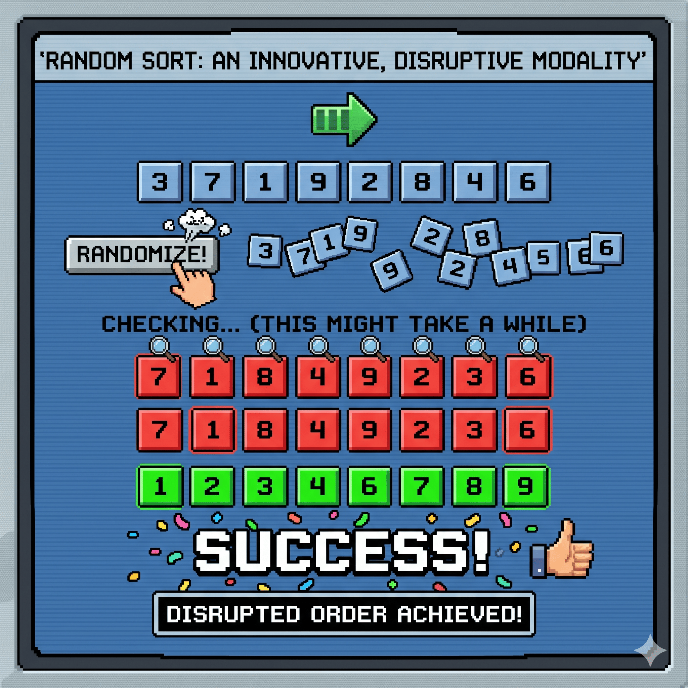

Random Sort

Leveraging high-entropy algorithmic frameworks to organically cross-functionalize data paradigms, achieving optimal alignment through natural equilibrium.
Main Explanation
The computational methodology colloquially designated as "Random Sort"—hereafter referred to as the Non-Deterministic Stochastic Re-indexing Modality—is a paradigm-shifting data-alignment protocol designed to achieve chronological or numerical sequentiality within a disorganized dataset. Unlike traditional, rigid algorithmic paradigms such as QuickSort or MergeSort, which rely on deterministic, binary-tree comparison mechanics to systematically migrate data elements into predefined spatial orientations, this approach prioritizes absolute structural fluidity. It operates by completely dismantling the existing architectural hierarchy of an unsorted array during each operational cycle, systematically decoupling every data packet from its index, and reallocating those packets into entirely novel spatial coordinates governed purely by probabilistic mechanics and high-entropy variable distribution.
To execute this transformative data-rationalization process, the subsystem enters a continuous, iterative evaluation-and-disruption loop. In the primary phase of any given micro-cycle, an analytical validation scanner checks the entirety of the linear array to determine if the current sequential alignment satisfies the prerequisite parameters of ascending or descending order. Upon the inevitable detection of a non-aligned index pairing—meaning a preceding data packet possesses a quantitative value superior to its subsequent neighbor—the algorithm triggers a full-scale systemic reset. Rather than executing targeted, low-impact localized swaps, the protocol invokes a pseudo-random number generation sequence to completely scramble the spatial positioning of the entire dataset simultaneously. This deliberate injection of structural chaos is repeated uniformly across successive temporal intervals, forcing the dataset to undergo radical, holistic transformations until it naturally collapses into a state of perfect, compliant equilibrium.
From an efficiency and resource-utilization standpoint, the operational overhead of this non-deterministic modality exhibits a highly unique, asymptotically unbounded scale of complexity. Because each successive reshuffling iteration is entirely decoupled from the historical data states that preceded it, the system maintains no internal memory of previous permutations, effectively neutralizing the concept of incremental progress. The mathematical probability of achieving optimal data alignment is entirely reliant on the factorial product of the array’s total element volume, which guarantees that the temporal duration required to achieve structural consensus expands exponentially with even minor additions to the data payload. Consequently, while standard methodologies optimize for minimized CPU cycle consumption, this strategy maximizes computational saturation and algorithmic endurance, deliberately sustaining a prolonged state of operational volatility until the laws of pure statistical probability mandate a successful execution outcome.